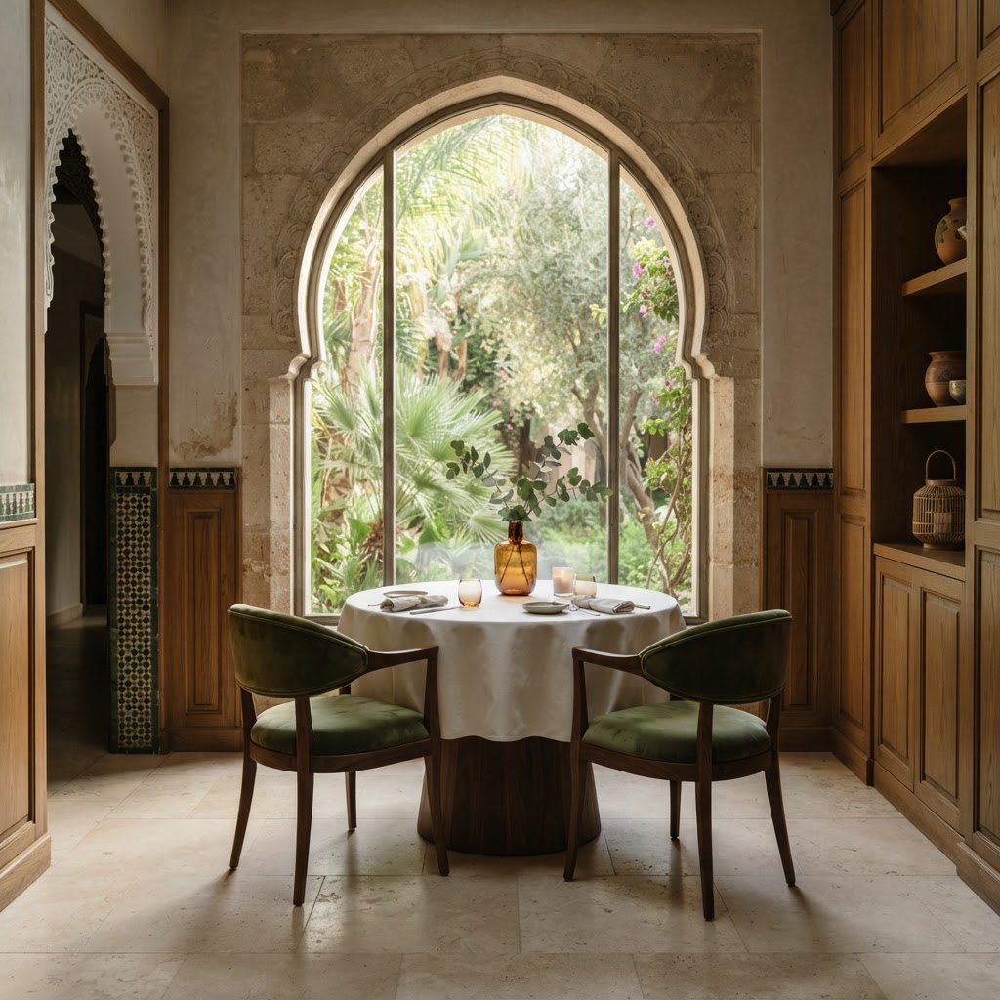

I
Le produit d’abord
Des récoltes au meilleur de leur saison, des poissons de l’Atlantique et des ingrédients choisis pour leur justesse.
01 / La maison
Au cœur de Casablanca, Maison Élégance fait dialoguer l’hospitalité marocaine et une gastronomie contemporaine, précise et généreuse.
Bois patinés, pierre claire, lumière feutrée : chaque détail invite à ralentir. Ici, le raffinement tient autant à ce que l’on goûte qu’à ce que l’on ressent.

02 / Notre philosophie
I
Des récoltes au meilleur de leur saison, des poissons de l’Atlantique et des ingrédients choisis pour leur justesse.
II
Safran, agrumes et épices délicates : notre terroir inspire une cuisine ouverte, sans jamais masquer l’essentiel.
III
Un service attentif et discret, un rythme qui vous appartient et cette générosité qui fait toute la différence.